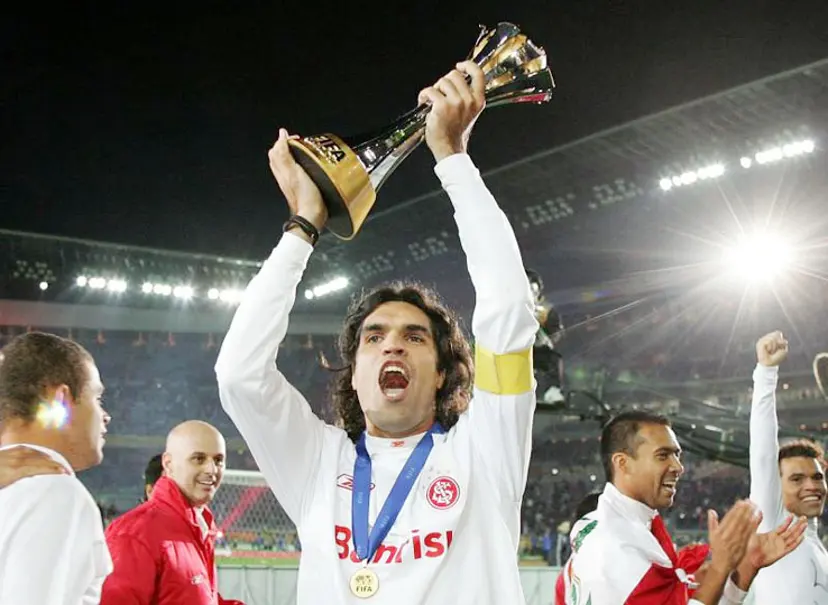
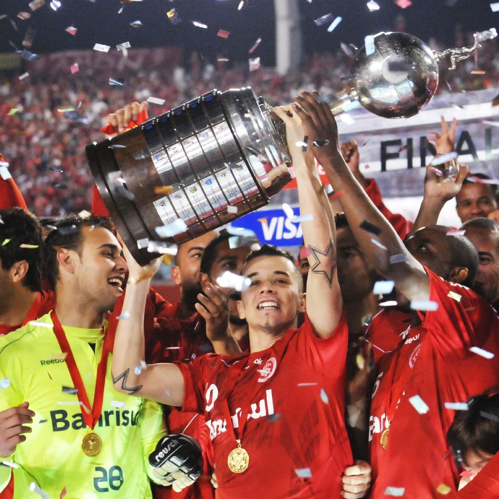
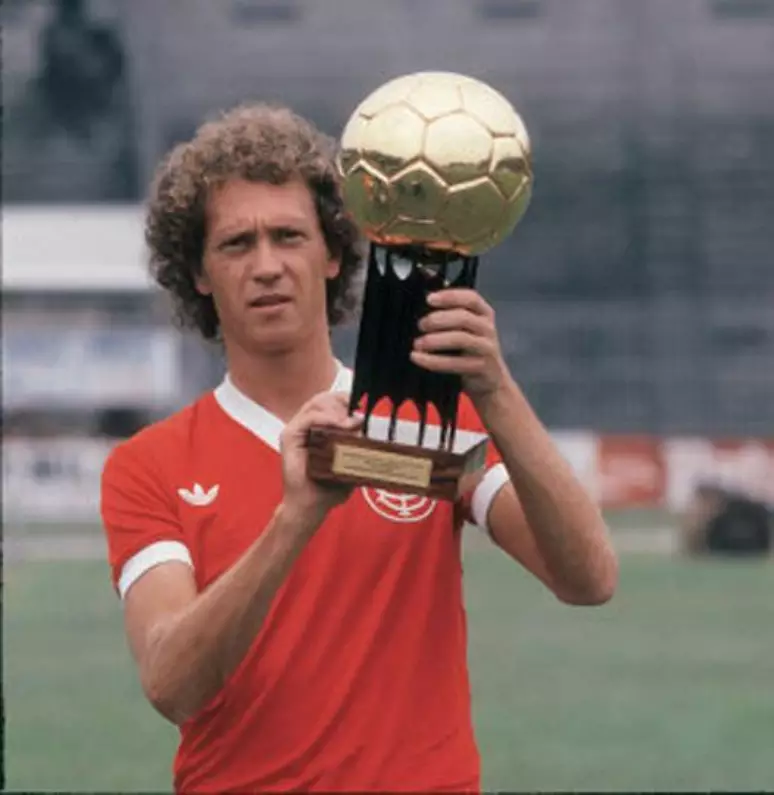

Ídolos

Fernando Lúcio da Costa(Fernandão)
Chamado por muitos de maior ídolo da história do Clube, fui campẽao da Libertadores e do Mundial sendo um dos principais jogadores e a principal liderança dentro do vestiário!

Andrés Nicolás D'alessandro
O ídolo mais atual e muito conhecido fui campẽao da Copa Sul-Americana em 2008 e campẽao da Libertadores em 2010! Além disso meu carisma e personalidade encantaram a torcida e hoje trabalho novamente no clube na comissão do Roger Machado!

Paulo Roberto Falcão
Eu com toda minha ternura e elegância dentro de campo fui tricampeão Brasileiro e pentacampeão Gaúcho pelo Internacional! Conhecido como "Rei de roma" quando atuei no futebol europeu, encantei os torcedores do clube do povo com todas as minhas habilidades!